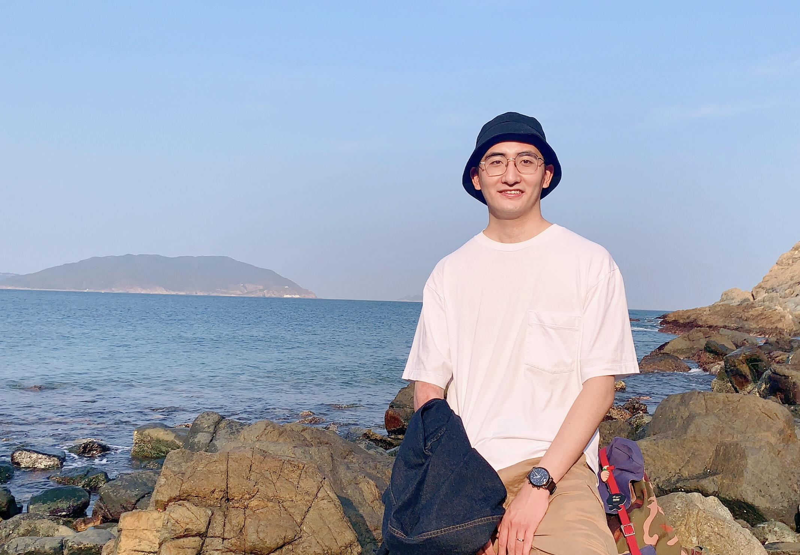
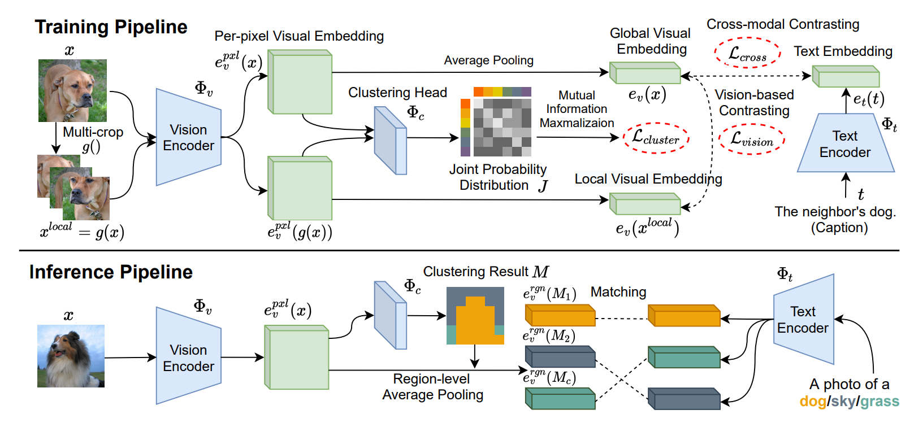
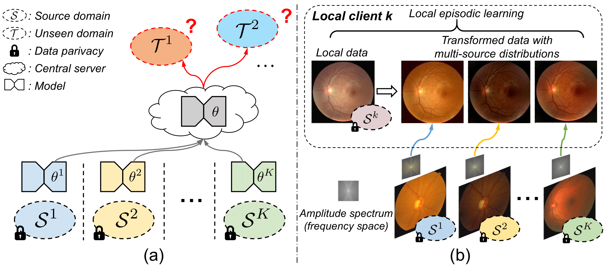

Quande LiuVisual Generation Group (Kling Team)Kuaishou TechnologyShenzhen, Guangdong, China
Email: qdliu0226@gmail.com
|
 |


Biography
I am currently a Senior Researcher at Visual Generation Group (a.k.a. Kling Team), Kuaishou Technology.. I got my Ph.D degree from the Department of Computer Science and Engineering, The Chinese University of Hong Kong, and received the B. Eng (honors) degree from Chu Kochen Honors College, Zhejiang University in 2018.
Recently, I mainly study generative AI (expecially image/video generation) and multi-modal learning.
We are actively looking for interns to work on cutting-edge research topics in video generation and multi-modal learning. Feel free to email me if you are interested.
News
- [01/2025] Our work GameGen-X for open-world video game gneration was accepted by ICLR 2025.
- [06/2024] Our work for visual text video generation (i.e., Text-Animator) was released.
- [04/2024] Our work for zero-shot human video generation (i.e., ID-Animator) was open-sourced.
-
[08/2023] Great honor to be awarded with the
CUHK Young Scholar Thesis Award
! -
[05/2022] I passed my oral defense and become a
Ph.D.
, at the day of May 19, 2022! - [07/2022] Paper on vision-language-driven semantic segmentation (ViL-Seg) was accepted by ECCV'22.
- [12/2021] Paper on single domain generalization for semantic segmentation was accepted by AAAI'22.
-
[09/2021] We won the
champion
of Federated Tumor Segmentation Challenge (FeTS)! - [03/2021] Paper on federated domain generalization (FedDG) was accepted by CVPR'21.
- [02/2021] Paper on federated learning for COVID-19 lesion detection was accepted by npj Digital Medicine.
-
[09/2020] Fortunate to receive
MSRA PhD Fellowship Nomination Award
.
- Selected Publications | - Full List
(* indicates equal contributions, † indicates corresponding author)| GameGen-X: Interactive Open-World Game Video Generation. Haoxuan Che*, Xuanhua He*, Quande Liu†, Cheng Jin, Hao Chen† International Conference on Learning Representations (ICLR), 2025. [paper][code][project page] |
||
| Text-Animator: Controllable Visual Text Video Generation. Lin Liu, Quande Liu, Shengju Qian, Yuan Zhou, Wengang Zhou, Houqiang Li, Lingxi Xie, Qi Tian ArXiv Preprint, 2024. [paper][code][project page] |
|
| ID-Animator: Zero-Shot Identity-Preserving Human Video Generation. Xuanhua He, Quande Liu†, Shengju Qian, Xin Wang, Tao Hu, Ke Cao, Keyu Yan, Man Zhou, Jie Zhang†. ArXiv Preprint, 2024. [paper][code][project page] |
|
|  | Open-world Semantic Segmentation via Contrasting and Clustering Vision-Language Embedding. Quande Liu, Youpeng Wen, Jianhua Han, Chunjing Xu, Hang Xu, Xiaodan Liang. European Conference on Computer Vision (ECCV), 2022. [paper] |

|
Single-domain Generalization in Image Segmentation via Test-time Adaptation from Shape Dictionary. Quande Liu, Cheng Chen, Qi Dou, Pheng Ann Heng. AAAI Conference on Artificial Intelligence (AAAI), 2022. [paper] |
|  | FedDG: Federated Domain Generalization on Image Segmentation via Episodic Learning in Continuous Frequency Space. Quande Liu, Cheng Chen, Jing Qin, Qi Dou, Pheng-Ann Heng IEEE Conference on Computer Vision and Pattern Recognition (CVPR), 2021. |

|
Federated Deep Learning for Detecting COVID-19 Lung Abnormalities in CT: A Privacy-preserving Multinational Validation Study. Qi Dou, Tiffany Y So, Meirui Jiang, Quande Liu, Varut Vardhanabhuti, Georgios Kaissis, Zeju Li, Weixin Si, Heather Lee, Kevin Yu, Zuxin Feng, Li Dong, Egon Burian, Friederike Jungmann, Rickmer Braren, Marcus Makowski, Bernhard Kainz, Daniel Rueckert, Ben Glocker, Simon Yu, Pheng Ann Heng npj Digital Medicine, Nature Publishing Group, 2021. |
Honors & Awards
-
CUHK Young Scholar Thesis Award, 2023 -
Itarle Scholarship, 2022 -
MSRA PhD Fellowship Nomination Award, Microsoft Inc., 2020 -
Outstanding Graduates Award, Zhejiang Province, 2018 -
Zhejiang University Scholarship, 2015-2017 -
Admission to Chu Kochen Honors College, Zhejiang University, 2014
Professional Activities
-
Conference Reviews:
IEEE Conference on Computer Vision and Pattern Recognition (CVPR) 2021
AAAI Conference on Artificial Intelligence (AAAI) 2021
International Conference on Medical Image Computing and Computer-Assisted Intervention (MICCAI) 2020
-
Journal Reviews:
IEEE Transactions on Pattern Analysis and Machine Intelligence (TPAMI)
IEEE Transactions on Medical Imaging (TMI)
Medical Image Analysis (MedIA)
IEEE Transactions on Image Processing (TIP)
IEEE Journal of Biomedical and Health Informatics (JBHI)
IEEE Access
Neurocomputing
Computer Methods and Programs in Biomedicine (CMPB)
Teaching
| 2019-2020 | Spring | Principles of Programming Languages (CSCI 3180) |
| 2019-2020 | Fall | Problem Solving by Programming (ENGG 1110) |
| 2018-2019 | Spring | Problem Solving by Programming (ENGG 1110) |
| 2018-2019 | Fall | Digital Logic and Systems (ENGG 2020). |
© Quande Liu | Last updated: Mar 2021